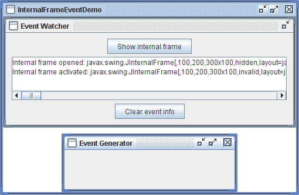

Lección: Escribiendo Listener Events
Sección: Implementando Listeners para los Eventos Comunmente Manejados
Cómo Escribir un Internal Frame Listener
Un InternalFrameListener es similar a un WindowListener. Como el window listener,
el internal frame listener monitoriza eventos que ocurren cuando la "ventana" se muestra por primera
vez, se cierra, se iconifica, se deiconifica, se activa, o se desactiva. Antes de usar un internal frame
listener, por favor familiarícese con la interfaz WindowListener en
Cómo Escribir Window Listeners.
La aplicación mostrada en la figura siguiente demuestra los eventos de marco interno. La aplicación monitoriza los eventos de marco interno desde el marco Event Generator, mostrando un mensaje que describe cada evento.

Intente esto:
-
Pulse el botón Lanzar para ejecutar InternalFrameEventDemo usando
Java™ Web Start (
descargue KDJ 7 o
posterior). Alternativamente, para compilar y ejecutar el ejemplo por sí mismo, consulte el
índice de ejemplos.

-
Muestre el marco interno Event Generator pulsando el botón Show internal frame.
Debería ver un mensaje "Internal frame opened" en el área de visualización. -
Intente varias operaciones para ver que ocurre. Por ejemplo, pulse el Event Generator para que se
active. Pulse el Event Watcher para que el Event Generator se desactive. Pulse las decoraciones del
Event Generator para iconificar, maximizar, minimizar, y cerrar la ventana.
Vea Cómo Escribir Window Listeners para obtener información sobre qué clase de eventos verá.
Aquí está el código del manejo del evento de marco interno:
public class InternalFrameEventDemo ...
implements InternalFrameListener ... {
...
public void internalFrameClosing(InternalFrameEvent e) {
displayMessage("Internal frame closing", e);
}
public void internalFrameClosed(InternalFrameEvent e) {
displayMessage("Internal frame closed", e);
listenedToWindow = null;
}
public void internalFrameOpened(InternalFrameEvent e) {
displayMessage("Internal frame opened", e);
}
public void internalFrameIconified(InternalFrameEvent e) {
displayMessage("Internal frame iconified", e);
}
public void internalFrameDeiconified(InternalFrameEvent e) {
displayMessage("Internal frame deiconified", e);
}
public void internalFrameActivated(InternalFrameEvent e) {
displayMessage("Internal frame activated", e);
}
public void internalFrameDeactivated(InternalFrameEvent e) {
displayMessage("Internal frame deactivated", e);
}
void displayMessage(String prefix, InternalFrameEvent e) {
String s = prefix + ": " + e.getSource();
display.append(s + newline);
}
public void actionPerformed(ActionEvent e) {
if (SHOW.equals(e.getActionCommand())) {
...
if (listenedToWindow == null) {
listenedToWindow = new JInternalFrame("Event Generator",
true, //resizable
true, //closable
true, //maximizable
true); //iconifiable
//We want to reuse the internal frame, so we need to
//make it hide (instead of being disposed of, which is
//the default) when the user closes it.
listenedToWindow.setDefaultCloseOperation(
WindowConstants.HIDE_ON_CLOSE);
listenedToWindow.addInternalFrameListener(this);
...
}
}
...
}
}
La IPA de Internal Frame Listener
El Interfaz InternalFrameListener
La clase adaptadora correspondiente es
InternalFrameAdapter.
| Método | Propósito |
|---|---|
| internalFrameOpened(InternalFrameEvent) | Llamada justo después de que el marco interno monitorizado ha sido mostrado por primera vez. |
| internalFrameClosing(InternalFrameEvent) |
Llamado en respuesta a una petición de usuario de que el marco interno monitorizado va a ser cerrado.
Por defecto, JInternalFrame oculta la ventana cuando el usuario la cierra. Puede usar el
método setDefaultCloseOperation de JInternalFrame para especificar otra
opción, la cual debe ser DISPOSE_ON_CLOSE o DO_NOTHING_ON_CLOSE (ambas
definidas en WindowConstants, un interfaz que JInternalFrame implementa). O
implementando un método internalFrameClosing en el internal frame listener, puede agregar
comportamiento personalizado (tal como mostrar diálogos o salvar datos) en un cierre del marco interno.
|
| internalFrameClosed(InternalFrameEvent) | Llamado justo después de que el marco interno monitorizado ha sido cerrado. |
|
internalFrameIconified(InternalFrameEvent)
internalFrameDeiconified(InternalFrameEvent) |
Llamado justo después de que el marco interno monitorizado ha sido iconificado o deiconificado, respectivamente. |
|
internalFrameActivated(InternalFrameEvent)
internalFrameDeactivated(InternalFrameEvent) |
Llamado justo después de que el marco interno monitorizado es activado o desactivado, respectivamente. |
Cada método del evento de marco interno tiene un único parámetro: un objeto
InternalFrameEvent. La clase InternalFrameEvent habitualmente no define
métodos útiles. Para obtener el marco interno que disparó el evento, use el método getSource
que InternalFrameEvent hereda desde java.util.EventObject.
Ejemplos que Usan Internal Frame Listeners
Ninguno de los otros ficheros fuente contienen actualmente internal frame listeners. Sin embargo, los internal
frame listeners son muy similares a los WindowListeners y varios programas de Swing tienen
window listeners:
| Ejemplo | Dónde Está Descrito | Notas |
|---|---|---|
InternalFrameEventDemo
|
Esta Sección | Informa de todos los eventos de marco interno que ocurren en un marco interno para demostrar las circunstancias bajo las cuales se disparan los eventos de marco interno. |
DialogDemo |
Características del Componente de Texto |
CustomDialog.java usa setDefaultCloseOperation en vez de un window
listener para determinar qué acción a tomar cuando el usuario cierra la ventana.
|
SliderDemo |
Cómo Usar Deslizadores | Monitoriza los eventos de iconificación y deiconificación de la ventana, de forma que pueda parar la animación cuando la ventana no es visible. |